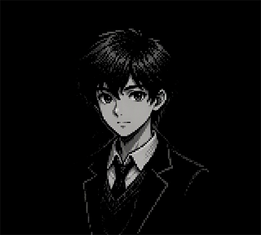

Weather App
天气查询小工具
用 JavaScript 调用公开天气接口，输入城市就能查看当天的温度与天气概况，练手接口请求和数据处理。
一屏读懂我：简历、爱好与性格
教育背景：天津大学香港理工大学深圳未来技术学院 · 计算机科学与技术专业 · 2026 级
技能栈：HTML / CSS / JavaScript 基础，正在系统学习前端开发
学习经历：入学后用课余时间自学前端开发，从 HTML 语义化标签起步，逐步掌握 CSS 布局与响应式设计，并独立完成了本站（个人主页）的搭建与样式调试；目前正在补 JavaScript 基础，下一步计划做出带接口调用的交互小工具。
课余喜欢打排球和羽毛球，享受和同学在球场上配合的感觉；也爱读悬疑推理类小说，喜欢跟着线索一起推演真相。
性格开朗热情，也乐于帮助身边的人。
喜欢自己动手，把想法做成贴合自己需要的工具或程序。
几件正在慢慢做的小作品
用 JavaScript 调用公开天气接口，输入城市就能查看当天的温度与天气概况，练手接口请求和数据处理。
用 JavaScript 实现任务的添加、完成与删除，窗口关闭后也能保存，是一次完整的增删改查练习。
用纯 HTML / CSS 搭建的文章页面，记录我学习过程中的笔记、总结与一些小想法。
一个正在搭建中的“虚拟的我”，以后陪你聊聊

欢迎来聊，随时找我
反馈不会公开，只有我能看到。